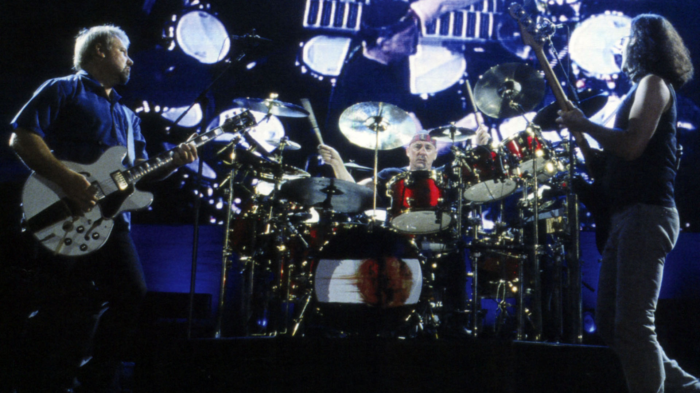

Rush Discography
Also known as "The Holy Triumvirate."

Alex Lifeson (left), Neil Peart (center), and Geddy Lee (right) on stage during Rush in Rio (2003).
Image courtesy of 2112.net
Albums
- 1974 Rush
- 1975 Fly by Night
- 1975 Caress of Steel
- 1976 2112
- 1977 A Farewell to Kings
- 1978 Hemispheres
- 1980 Permanent Waves
- 1981 Moving Pictures
- 1982 Signals
- 1984 Grace Under Pressure
- 1985 Power Windows
- 1987 Hold Your Fire
- 1989 Presto
- 1991 Roll the Bones
- 1993 Counterparts
- 1996 Test for Echo
- 2002 Vapor Trails
- 2007 Snakes & Arrows
- 2012 Clockwork Angels
Tours
- 1974-1975 Rush Tour
- 1975 Fly By Night Tour
- 1975-1976 Caress of Steel Tour
- 1976 2112 Tour
- 1976-1977 All The World's A Stage Tour
- 1977-1978 A Farewell To Kings Tour
- 1978 Archives Tour
- 1978-1979 Hemispheres Tour
- 1979-1980 Permanent Waves Tour
- 1980-1981 Moving Pictures Tour
- 1981 Exit ... Stage Left Tour
- 1982-1983 Signals Tour
- 1983-1984 Grace Under Pressure Tour
- 1985-1986 Power Windows Tour
- 1987-1988 Hold Your Fire Tour
- 1990 Presto Tour
- 1991-1992 Roll the Bones Tour
- 1994 Counterparts Tour
- 1996-1997 Test for Echo Tour
- 2002 Vapor Trails Tour
- 2004 R30: 30th Anniversary Tour
- 2007-2008 Snakes & Arrows Tour
- 2010-2011 Time Machine Tour
- 2012-2013 Clockwork Angels Tour
- 2015 R40 Live Tour
To learn more about this Canadian prog-rock trio, please see their Wikipedia page.